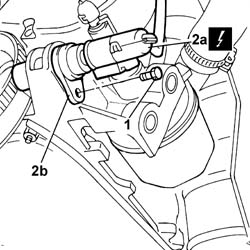

5510C26 rpm sensor - r+r
- Path
- Procedures > 55 ELECTRICAL EQUIPMENT > 5510 ENGINE IGNITION > 5510C coil, ecu, sensors > 5510C26 rpm sensor - r+r
- Kind
- repair procedure (removal / refitting; the operation number is the code)
- Applies to
- engines: 1.1, 1.2 8v; all production periods
- Interactive page
- https://sloeber94.github.io/elrnDB-fPnd/en/#/2752945
Applies to: engines: 1.1, 1.2 8v; all production periods
 Removing
Removing
 Refitting
RefittingPlace the car on a lift.
Disconnect the battery negative terminal.
Raise the car.
1. Undo the retaining bolt.
2. Disconnect the electrical connection (2a) and remove the rpm sensor (2b).
 | Name | Connector |
|---|---|---|
2a | Rpm sensor | K46 |

Applies to: engines: 1.1, 1.2 8v; all production periods
Refitting
RemovingFit the rpm sensor in its seating and tighten the fixing bolt.
Connect the electrical connection.
| Name | Connector |
|---|---|---|
- | Rpm sensor | K46 |
Lower the vehicle.
Connect the battery negative terminal.
Remove the vehicle from the ramp.
Topics that link to this page (27)
- 0510A20 timing gear with belt drive - check - carry out operation with cam cover(s) removed and tappets adjusted
- 0510A30 cam lift - check with cam cover(s) removed
- 1016C10 SINGLE CYLINDER HEAD, REMOVED - OVERHAUL
- 1016C11 SINGLE CYLINDER HEAD-R R GASKET FOR VERSIONS WITH AIR CONDITIONER
- 1020D14 FRONT CRANK SHAFT OIL SEAL COVER - R + R AND REPLACE SEALS FOR VERSIONS WITH OIL PUMP ON CRANK SHAFT, TIMING SIDE
- 1020D16 FRONT CRANKSHAFT OIL SEAL COVER - R+R AND REPLACE GASKETS FOR VERSIONS WITH AIRCONDITIONER
- 1020D18 FRONT CRANK SHAFT COVER OIL SEAL - REPLACE
- 1020D20 FRONT CRANKSHAFT COVER OIL SEAL - REPLACE FOR VERSIONS WITH AIR CONDITIONER
- 1028H20 piston with connecting rod - r r
- 1028H21 piston with connecting rod - r r
- 1032B10 toothed timing belt - r + r for timing adjustment or replacement
- 1032B14 toothed timing belt - r + r for timing adjustment or replacement versions with air conditioner
- 1032B46 toothed drive pulley - r + r
- 1032B47 toothed drive pulley - r r for versions with air conditioner
- 1032B52 toothed driven pulley (one) - r + r
- 1032B53 driven toothed pulley (one) - r r for versions with air conditioner
- 1032C18 mobile timing system tensioner - r + r for 24 valve engines
- 1032C19 mobile timing belt tensioner - r r for versions with air conditioner
- 1032D12 timing system protective cover(s) - r + r
- 1036B10 overhead camshaft - r r on vehicle
- 1088C10 water pump - r + r
- 1088C12 water pump - r+r for versions with air conditioner
- 1092A10 Crankshaft services PULLEY - R.R.
- 1092A12 crankshaft pulley - r+r for versions with air conditioner
- 1092B60 alternator drive belt - r + r
- 5040A26 compressor mount - r r
- 5530A10 alternator - r+r